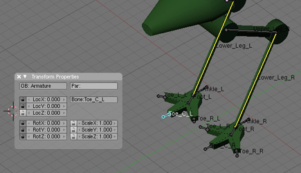

Blender Beginner for Beginner Tutorial: Mech Model Part 3: Rigging
20th June 2010 - Blender 2.47
After creating and texturing a mech model, the next step towards animating it is rigging. This is the process of setting up bones in the model such that when the bone is moved, the mech mesh deforms in an expected manner. The final set of bones to animate a walk cycle is shown in the image below. Once this step is complete, the model will be ready to animate.
- Mech Model Part 1: Modelling
- Mech Model Part 2: Texturing
- Mech Model Part 3: Rigging
- Mech Model Part 4: Animating
- Before starting ensure the mech is positioned such that it straddles the X-axis - place a leg on each side of the origin with the average X location of the whole mech set to 0 (assuming the mech is symmetrical). This is so that some mirroring functions of rigging, which work only in the X-axis, can be applied.
-
Go to a side view (NUMPAD3). Start by removing any transformations,
(there shouldn’t be any, but just in case we don’t want them interfering
with the bones). With the mech model selected in Object mode press
CTRL-A and choose to set Scale and Rotation to ObData (as a result the
model’s Rot values should go to 0 and the Scale values to 1 - look at
the Transform Properties with the N KEY). Now add the armature (SPACE
-\> Add -\> Armature). A little double-headed pyramid object will appear
- this is the master bone, other bones will be connected to it such that
when the master bone moves all other bones move the same way. Use the G
KEY to position it behind the hips of the mech. Also the tip (narrow bit
of the bone) should be facing away from the mech, while the root
(thicker part of the bone) should be nearer the mech. The bone can be
stretched or angled by selecting it in Object mode and then going to
Editing mode (TAB) then grabbing the tip to move it - just like other
objects. On the Armature subpanel of the Editing (F9) panel set Names on
(so the names of the bones are shown on screen) and X-Ray on (so the
bones can be seen through the model). With the bone in Edit mode change
its name from the default Bone to Master, this is done on the Transform
Properties box on bone. Also, disable the transformation manipulator, so
the screen is less cluttered (CTRL-SPACE -\> Disable).
-
Next the leg bones. Set X-Axis Mirror on the Armature subpanel (this is
why the mech was positioned across the x-axis). Select the root of the
master bone in edit mode and then press SHIFT-E. This will extrude two
bones out from the master bone, although only one can be seen at the
moment. The master bone will be the parent of these new bones . The
parent relationship means that the bones move with each other. Move the
end of the extruded bone to the centre of the knee.
-
Go to front view (NUMPAD1) and grab one of the extruded bones. As you
move it you will see another mirrored bone. One will be named Master\_L
and one Master\_R, for left and right. Whichever you have grabbed, move
it to the appropriate leg so that the root is in the centre of the hip
and the tip in the centre of the knee. Shift back and forth between side
and front views, moving the bone until it is properly positioned inside
the upper leg of the mech (roughly positioned is good enough, pinpoint
accuracy is not required). By positioning one of the bones, the other
should also be in the correct position thanks to the X-Axis Mirroring.
Then rename them Upper\_Leg\_L and Upper\_Leg\_R.
-
Select the tip of one of the upper leg bones and press SHIFT-E again.
Two more bones are extruded this time with their roots attached to the
tip of the upper leg bones. Because we extruded from the tip rather than
the root this means this bone is a connected child of the upper leg bone
(extruding from the root makes the child bone unconnected). Move them so
that they go from the knee to the foot (again switching views). Rename
them Lower\_Leg\_L and Lower\_Leg\_R.
-
Next create the ankle by selecting the tip of lower leg and CTRL\_RMB
click behind the base of the leg (this works like extrude, the resulting
bone is a child of the first bone). Position the ankles so that they
extrude horizontally from the tip of the lower legs. Rename them as
ankles and remove their parent bone by blanking the “child of” box on
the Armature Bones subpanel when the bone is selected. It might help to
change from viewing the bones as octahedrons to sticks, as the former
will fill up too much of the screen for the fine detail work to come.
-
Create the feet by selecting the tip of the lower leg again and
CTRL\_RMB click in the centre of foot. Position them and rename them as
feet. The feet should be children of the ankles - select one of the feet
then SHIFT select the appropriate ankle, press CTRL-P to create the
parent relationship (select Keep Offset). This wasn’t done by extruding
from the ankle so that everything is in the right position.
-
Make the toes children of the feet. They should not be connected to the
feet and should be positioned at the edge of the mesh’s toes so the toes
won’t roll strangely as the side toes are off-axis compared to the of
the rest of the legs.
- Select all bones (press A KEY until all bones are selected). Press CTRL-N and accept the option presented - this will remove any roll applied to the bone and will make predicting the way they move easier. Next the legs should act as a chain, so moving the lower leg moves the upper leg too. This is called an IK chain. The ankles will be the controllers for the legs - moving them will move the entire leg. Go to Pose mode (CTRL-TAB until the mode selector says Pose, or just select it from the dropdown), select the ankle and SHIFT select the lower leg. Press CTRL-I and accept the To Active Bone option. This makes the ankle the target bone of the IK chain bones in the legs. IK means Blender will move the chain bones (lower leg) to keep the end bones (upper leg) in place despite movement of the target (ankles). The IK target can’t be a child of one of the bones in the chain (this causes a cyclic dependency), so this is why the ankles are not children of the lower legs. Try grabbing the ankle (you know which one is selected as it will be highlighted in blue) and moving or rotating it to see how the IK chain works, but make sure you return it to the original location when done.
-
The toes should only be able to move up or down, not from side to side.
To prevent this, click the little lock icon next to the Loc values and
Rot values on the Transform Properties panel, except for the LocZ value.
 - To make the ankles move with the mech as a whole, set them to have the master bone as their parent, keeping the offset.
-
Now the legs are setup, bones for the body are required so that it too
will move with the mech. Create a bone for the spine running from the
hips up to the top of the body, with the master bone as its parent.
Create another bone as a child of the spine, which runs along the body
horizontally (or nearly so). Create a bone running along the hips as a
child of the spine.

- So far when the bones are moved the mech mesh does not move too. With the armature complete we can make it deform the mech. Go to Object mode and select the whole armature, then SHIFT select the mech model and press CTRL-P, selecting Object from the options displayed. With the mech selected in Object mode, go to the Modifiers subpanel of the Editing panel. Click Add Modifier and choose Armature from the available options. Deselect the Vert Group option on the new modifier’s config and enter the name of the armature (probably “Armature”) in the Ob field.
-
Select the armature and go into Pose mode. Select an ankle and try
moving it. The mech mesh underneath moves as well. Unfortunately, you
will probably find too much of the mesh moves. This is because each bone
is affecting too much of the mesh. In the image below you will see that
when a leg is moved, some of the body and toes also move in a strange
way.
And it is done. Try moving the mech around using the master, spine and ankle bones - this should provide all the movement required. You can download the blend file here. The next stage is to animate a walk cycle

Mech
Rigged Blender Model by
Charles
Cordingley is licensed under a
Creative
Commons Attribution 2.0 UK: England & Wales License.